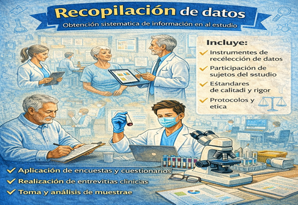

Se refiere al procedimiento organizado mediante el cual el investigador obtiene información pertinente y confiable con el propósito de responder una pregunta de estudio, verificar hipótesis o comprender un fenómeno específico. Esta etapa es fundamental dentro del método científico, ya que proporciona evidencias objetivas que servirán como base para el análisis e interpretación de los resultados. La información recolectada puede ser de naturaleza cuantitativa, cuando se expresa en valores numéricos medibles, o cualitativa, cuando describe percepciones, experiencias o características del fenómeno estudiado (Hernández Sampieri et al., 2014).
Este proceso requiere seleccionar fuentes apropiadas y emplear técnicas e instrumentos adecuados, tales como encuestas, entrevistas, observación directa, cuestionarios, registros clínicos o revisión documental. La recolección debe efectuarse de manera sistemática, ética y organizada, asegurando la validez y confiabilidad de los datos obtenidos. Una planificación cuidadosa reduce errores, evita sesgos y garantiza la calidad de la información que sustentará el estudio (Hernández Sampieri et al., 2014).
Segun Hernández Sampieri et al. (2014), el uso de tecnologías digitales, bases de datos científicas y sistemas electrónicos ha optimizado la recopilación de datos, permitiendo manejar grandes volúmenes de información con rapidez y precisión. En el ámbito de las ciencias de la salud, una adecuada recolección de datos resulta esencial para el diagnóstico, la toma de decisiones clínicas y la generación de evidencia científica orientada a mejorar la atención médica y la calidad de vida de la población
Figura 18
Recopilación de datos

Nota: Adaptado de Metodología de la investigación (6.ª ed.). Hernández Sampieri, R., Fernández Collado, C., & Baptista Lucio, M. P. 2014 McGraw-Hill Educación.